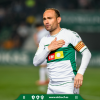
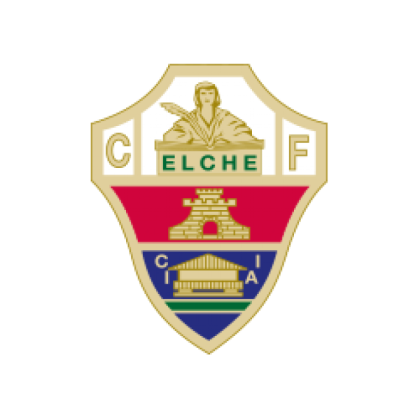
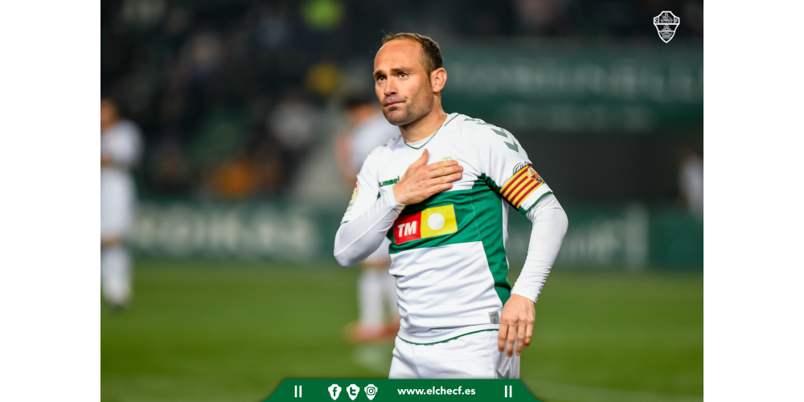

Official Website For Foot Goal

Official Website For Foot Goal
Leyenda del Elche CF



Juan Francisco Martínez Modesto, conocido como Nino, es una referencia histórica del Elche y de la Segunda División española. El delantero de Vera llegó a la entidad en 1997 después de pasar por la cantera del Real Madrid y se abrió camino desde los equipos de formación hasta el primer equipo. Su capacidad para aprovechar rechaces, aparecer en el área y competir durante más de dos décadas terminó convirtiéndolo en el jugador con más partidos y goles de la historia franjiverde.
Se retiró en 2021 como máximo goleador y jugador con más partidos en la historia del Elche.
Debutó con el primer equipo en noviembre de 1998 y pronto dejó un recuerdo decisivo: su gol ante el Melilla en la promoción de 1999 acercó al Elche al regreso a Segunda. Se afianzó como referencia ofensiva y fue máximo goleador del equipo en varias campañas. En 2006 marchó al Levante y después jugó en Tenerife y Osasuna. Con los tinerfeños firmó 29 goles en Segunda en 2008/09, obteniendo los trofeos Pichichi y Zarra y el reconocimiento de mejor jugador de la categoría.
Su regreso al Elche en 2016 inició una segunda etapa marcada por la capitanía y los ascensos. Resultó decisivo en la promoción de 2018 y volvió a marcar un gol fundamental ante el Zaragoza en el playoff de 2020, antes de cumplir el sueño de disputar Primera con la franja verde. Se retiró en 2021 con 475 partidos y 135 goles oficiales en el club. También cerró su carrera con 571 encuentros y 194 tantos en Segunda, una trayectoria recordada por su continuidad, compromiso y capacidad goleadora.